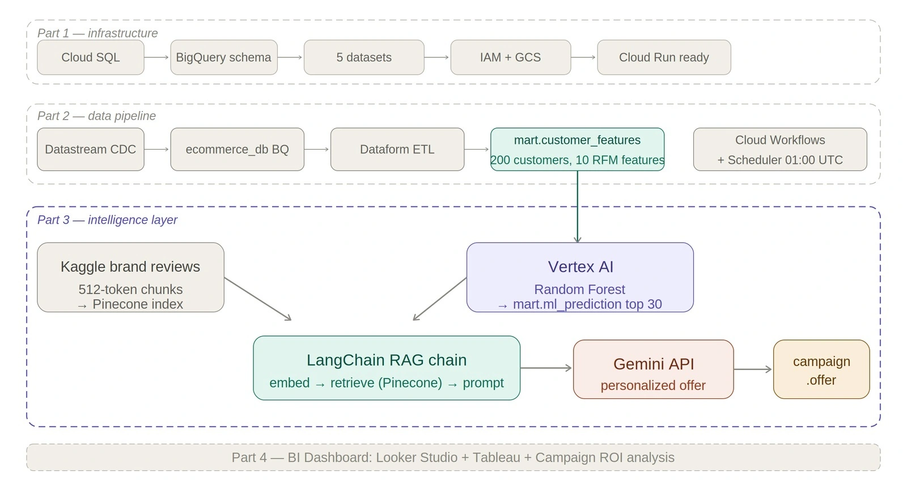
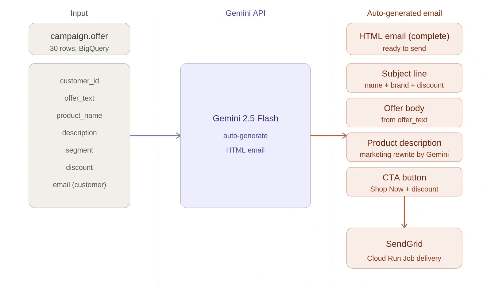
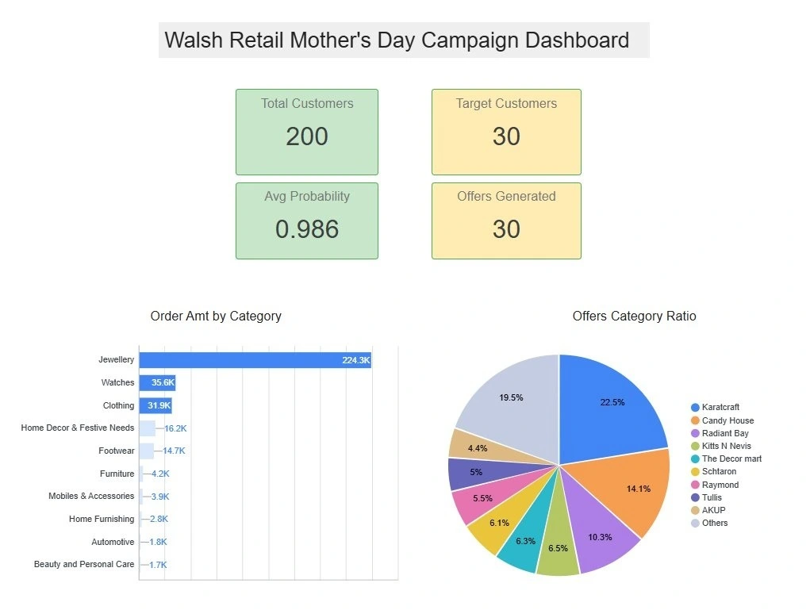
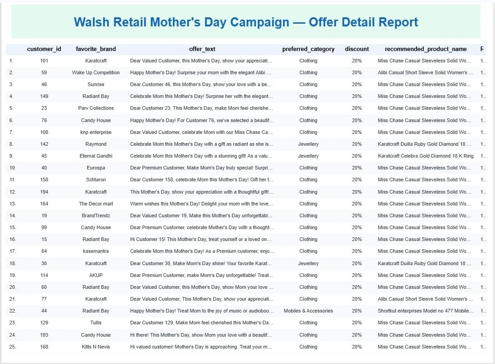

The problem
Sending the same message to every customer ignores purchase history and product preferences. The example connects those signals to audience selection, relevant offers, and personalized email content.
01 / AI Agents
From customer signals to personalized action.
NovaPunk builds AI agents around a defined business workflow: understanding customer signals, selecting the next action, generating relevant content, and connecting the result to operational systems. For marketing teams, this can bring audience targeting, product recommendations, personalized offers, delivery, and campaign visibility into one application.
Discuss this serviceSending the same message to every customer ignores purchase history and product preferences. The example connects those signals to audience selection, relevant offers, and personalized email content.
The service starts with a business objective and the rules that define a valid action. Data, prediction, generation, and delivery are designed together so the application produces a usable result.
Connect purchase history, product categories, and customer attributes. Derive recency, frequency, monetary value, and other features that support a targeting decision.
Build a model for the available data and evaluate it before use. In the Walsh example, a Random Forest ranks customers and feature importance helps inspect the signals behind the model.
Combine customer preferences, catalog details, discount rules, and retrieved brand information. Generate an offer with relevant context rather than relying on a single generic campaign template.
Connect generated content to an approved delivery channel and record the output. A dashboard shows selected audiences, recommendations, model scores, and campaign activity.
The research example illustrates how the service components fit together. These steps describe the supplied project, rather than a promise of identical results for every business.
Dataform creates customer features from synthetic orders: recency, order frequency, total spend, average and maximum order value, category breadth, quantity, discount behavior, and favorite brand.
Vertex AI Colab Enterprise trains a Random Forest and scores 200 customers. The 30 highest-scoring customers are selected. The report defines Premium at 0.85 or above with a 20% discount, and Very High from 0.75 to below 0.85 with 15%.
A corpus of 500 synthetic brand reviews is embedded and indexed in Pinecone. LangChain retrieves relevant passages and combines them with the customer profile and product information for Gemini offer generation.
Looker Studio connects to BigQuery for campaign overview and offer-detail views. Gemini creates a subject line and HTML email; the notebook demonstrates SendGrid submission. Separate email_log and email_content tables preserve status and generated content.
Email is the implemented demonstration. The report also identifies ways to reuse offer outputs in other channels; these extensions must be scoped and integrated separately.
Personalized subject, greeting, product description, offer body, and call to action, supported by an operational view of the generated offers.
SMS, outbound call scripts, direct mail, web promotions, and push notifications are possible extensions of the offer data. They are not presented here as completed integrations.
The agent connects four responsibilities: ingesting business data, preparing a reusable analytical view, selecting and generating the next action, and delivering outputs with operational visibility. The Walsh Retail example shows how these responsibilities map to GCP and the AI components.
Workflow orchestration coordinates the data preparation; campaign records connect model outputs, generated content, and reporting.
Layer 01
Customer profiles, orders, product/SKU records, and related entities form the operational source. Initial migration establishes Cloud SQL tables; Datastream captures subsequent database changes for the BigQuery replica.
Cloud SQL · Datastream CDC · BigQuery source replica
Layer 02
Dataform joins the source records into customer features such as recency, frequency, spend, and preferences. A separate review corpus is embedded and indexed to supply contextual knowledge during generation.
Dataform · mart.customer_features · Embeddings · Pinecone
Layer 03
A Random Forest scores customers and writes the selected targets. LangChain retrieves relevant knowledge, while Gemini combines that context with products, customer preferences, and segment-based discount rules to generate offers.
Vertex AI · mart.ml_prediction · LangChain RAG · Gemini · campaign.offer
Layer 04
Gemini turns an offer into a personalized subject and HTML email. SendGrid receives the message. Looker Studio exposes target and offer information; campaign tables preserve submission/delivery status and generated content.
Gemini · SendGrid · Looker Studio · email_log · email_content

Continuous ingestion and scheduled feature preparation supply the campaign workflow. Prediction, generation, delivery, and reporting follow the prepared data.
Datastream reads the source binary log and propagates changes into BigQuery. This ingestion is continuous and distinct from the scheduled transformation run.
Output: An updated analytical replica of the operational source.
Cloud Scheduler triggers Cloud Workflows daily at 01:00 UTC. Workflows creates a Dataform compilation result and submits a workflow invocation for the SQLX transformations. The documented invocation return is not, by itself, verification that all downstream campaign stages completed.
Output: mart.customer_features and a traceable transformation invocation.
The Vertex AI Colab workflow reads the prepared features, trains/evaluates a Random Forest, and scores the customer population. The example selects 30 targets from 200 customers and records scores, segments, model version, and batch information.
Output: mart.ml_prediction with the selected audience.
Customer preferences guide retrieval of relevant review passages from Pinecone through LangChain. Gemini receives the retrieved context, recommended product, and campaign rules, then produces an individualized offer.
Output: campaign.offer with product recommendation, discount, and generated text.
Join the stored offer to customer and product information. Gemini returns the subject and HTML body, including greeting, rewritten product description, offer text, and call to action.
Output: Channel-ready email content for each selected customer.
The notebook submits the generated message through SendGrid. HTTP 202 records provider acceptance; an inbox example separately demonstrates receipt. Status history and full generated content are stored in separate campaign tables.
Output: Submission/status records and archived email content.
Looker Studio reads the prediction and offer tables to show audience size, model scores, product/category distribution, and offer details. Open/click tracking, A/B testing, and feedback into retraining are identified as later integration work.
Output: Campaign visibility for the business team, with a defined path for future feedback.

The reference project demonstrates CDC, scheduled Dataform invocation, customer targeting, generated offers, notebook-based email submission, and stored campaign records. Scheduling the complete ML-to-delivery chain, monitoring completion, retries, duplicate-send prevention, and response-driven model feedback are production integration work.
Walsh Retail is a fictional retailer developed for an internal Mother's Day marketing automation project. The supplied report follows the complete engineering path from Cloud SQL and BigQuery through Random Forest customer selection, RAG-assisted offer generation, Looker Studio reporting, and an email demonstration using Gemini and SendGrid.
Static demonstration page. Figures and examples replace the video presentation for now; no live agent, model, or simulator runs on this page.
The supplied report records 200 customers scored, 30 selected targets, and 30 personalized offers. It also includes a rendered generated email, a SendGrid HTTP 202 response, an inbox example, and delivery/content history tables. HTTP 202 confirms provider acceptance; the inbox screenshot is a separate delivery example. No measured uplift in conversion or revenue is reported.
| Customer | Segment | Product context | Next action |
|---|---|---|---|
| Sample customer A | Premium | Preferred category + retrieved review | Review personalized offer |
| Sample customer B | Very High | Purchase history + catalog | Review generated email |
| Sample customer C | Other | Campaign selection rules | Excluded from target audience |
Client-specific approval steps can be added before execution.


Metrics are reproduced from the supplied research or original project account. They have not been independently rerun for this website.
Based on Walsh Retail Marketing Automation - Sungwon Son, April-May 2026, with attribution to the original series at isupernova.io.
Tell us about your workflow, available data, and the decision or task you want to improve.
Contact NovaPunk